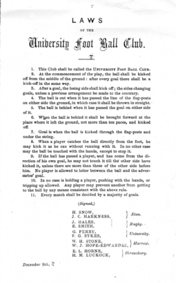
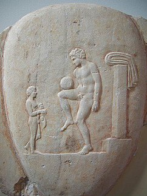
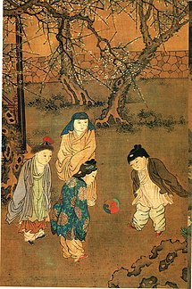
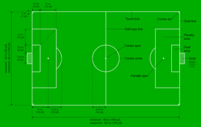
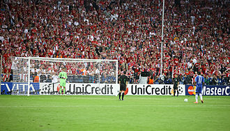
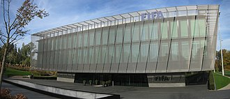

The attacking player (No. 10) attempts to kick the
ball beyond the opposing team's goalkeeper, between the goalposts,
and beneath the crossbar (not shown) to score a goal.
Highest governing body
FIFA
Nicknames
The Beautiful game - The world's game
First Played
Mid-19th century England
Characteristics
Contact
Yes
Team Members
11 per side (including goalkeeper)
Male&Female Competition
No, Seperate Competitions
Type
Team sport, ball sport
Equipment
Football(or soccer ball), shin pads
Venue
Football pitch (also known as football field, football ground, soccer field, soccer pitch or "pitch")
Glossary
Glossary of association football
Presence
Country or region
World wide
Olympic
Men's since the 1900 Olympics and women's since the 1996 Olympics
Paralympic
5-a-side since 2004 and 7-a-side from 1984 to 2016
Association football, more commonly known as football or soccer, is a team sport played between two teams of 11 players each,
who primarily use their
feet to propel a ball around a rectangular field called a pitch. The objective of the game is to score more goals than the opposing team
by moving the ball beyond the goal line into a rectangular-framed goal defended by the opposing team. Traditionally, the game has
been played over two 45-minute halves, for a total match time of 90 minutes. With an estimated 250million players active in over
200 countries and territories, it is the world's most popular sport.
The game of association football is played in
accordance with the Laws of the Game, a set of rules that has
been in effect since 1863 and maintained by the IFAB since 1886.
The game is played with a football that is 68–70 cm (27–28 in) in circumference.
The two teams compete to get the ball into the other team's goal (between the posts and under the bar),
thereby scoring a goal. When the ball is in play, the players mainly use their feet, but may use any other part of their body,
except for their hands or arms, to control, strike, or pass the ball. Only the goalkeepers may use their hands and arms,
and only then within the penalty area. The team that has scored more goals at the end of the game is the winner. Depending on the format of the competition,
an equal number of goals scored may result in a draw being declared, or the game goes into extra time or a penalty shoot-out.
Internationally, association football is governed by FIFA. Under FIFA, there are six continental confederations: AFC,
CAF, CONCACAF, CONMEBOL, OFC and UEFA. Of these confederations, CONMEBOL is the oldest one, being founded in 1916.
National associations (e.g. The FA or JFA) are responsible for managing the
game in their own countries both professionally and at an amateur level, and coordinating competitions
in accordance with the Laws of the Game. The most senior and prestigious international competitions are the
FIFA World Cup and the FIFA Women's World Cup. The men's World Cup is the most-viewed sporting event in the world,
surpassing the Olympic Games. The two most prestigious competitions in European club football are the UEFA Champions League and
the UEFA Women's Champions League, which attract an extensive television audience throughout the world. Since 2009, the final of
the men's tournament has been the most-watched annual sporting event in the world.
Name
Association football is one of a family of football codes that emerged from various ball games played worldwide since antiquity.
Within the English-speaking world, the sport is now usually called "football" in Great Britain and most of Ulster in the north of Ireland,
whereas people usually call it "soccer" in regions and countries where other codes of football are prevalent, such as Australia, Canada,
South Africa, most of Ireland (excluding Ulster), and the United States. A notable exception is New Zealand,
where in the first two decades of the 21st century, under the influence of international television, "football" has been gaining prevalence,
despite the dominance of other codes of football, namely rugby union and rugby league.
The term soccer comes from Oxford "-er" slang, which was prevalent at the University of Oxford in England from about 1875, and is thought
to have been borrowed from the slang of Rugby School. Initially spelt assoccer, it was later reduced to the modern spelling. This form of slang also
gave rise to rugger for rugby football, fiver and tenner for five pound and ten pound notes, and the now-archaic footer that was also a name
for association football. The word soccer arrived at its current form in 1895 and was first recorded in 1889 in the earlier form of socca.
History of the game
Kicking ball games arose independently multiple times across multiple cultures.
Phaininda and episkyros were Greek ball games. An image of an episkyros player depicted in low relief on a stele of c.
375–400 BCE in the National Archaeological Museum of Athens appears on the UEFA European Championship trophy.
Athenaeus, writing in 228 CE, mentions the Roman ball game harpastum. Phaininda, episkyros and harpastum were played
involving hands and violence. They all appear to have resembled rugby football, wrestling and volleyball more than what is recognisable as
modern football. As with pre-codified mob football, the antecedent of all modern football codes, these three games involved more handling
the ball than kicking it.
The Chinese competitive game cuju (蹴鞠, literally "kick ball"; also known as tsu chu) resembles modern association football.
Cuju players could use any part of the body apart from hands and the intent was to kick a ball through an opening into a net.
During the Han dynasty (206 BCE – 220 CE), cuju games were standardised and rules were established. Other East Asian games included kemari
in Japan and chuk-guk in Korea, both influenced by cuju. Kemari originated after the year 600 during the Asuka period.
It was a ceremonial rather than a competitive game, and involved the kicking of a mari, a ball made of animal skin.
In North America, pasuckuakohowog was a ball game played by the Algonquians; it was described as "almost identical to
the kind of folk football being played in Europe at the same time, in which the ball was kicked through goals". Association football in itself
does not have a classical history. Notwithstanding any similarities to other ball games played around the world,
FIFA has described that no historical connection exists with any game played in antiquity outside Europe.
The history of football in England dates back to at least the eighth century.
The modern rules of association football are based on the mid-19th century efforts to standardise the widely
varying forms of football played in the public schools of England.

The "Laws of the University Football Club" (Cambridge Rules) of 1856


On the left, an episkyros player on an ancient stone carving, c. 375–400 BCE,
exhibited at the National Archaeological Museum, Athens; on the right,
children playing cuju in Song dynasty China, 12th century
The Cambridge rules,
first drawn up at the University of Cambridge in 1848, were particularly influential in the
development of subsequent codes, including association football. The Cambridge rules were
written at Trinity College, Cambridge, at a meeting attended by representatives from Eton,
Harrow, Rugby, Winchester and Shrewsbury schools. They were not universally adopted. During
the 1850s, many clubs unconnected to schools or universities were formed throughout the
English-speaking world to play various forms of football. Some came up with their own
distinct codes of rules, most notably the Sheffield Football Club, formed by former
public school pupils in 1857, which led to the formation of
a Sheffield FA in 1867. In 1862, John Charles Thring of Uppingham School also devised an influential set of rules.These
ongoing efforts contributed to the formation of The Football Association (The FA) in 1863, which first met on the
morning of 26 October 1863 at the Freemasons' Tavern in Great Queen Street, London. The only school to
be represented on this occasion was Charterhouse. The Freemasons' Tavern was the setting for five
more meetings of The FA between October and December 1863; the English FA eventually issued the
first comprehensive set of rules named Laws of the Game, forming modern football. The laws
included bans on running with the ball in hand and hacking (kicking an opponent in the shins),
tripping and holding. Eleven clubs, under the charge of FA secretary Ebenezer Cobb Morley
, ratified the original thirteen laws of the game. The sticking point was hacking, which
a twelfth club at the meeting, Blackheath FC, had wanted to keep, resulting in them withdrawing from the FA.
Other English rugby clubs followed this lead and did not join the FA, and instead in 1871, along with Blackheath,
formed the Rugby Football Union. The FA rules included handling of the ball by "marks" and the lack of a crossbar,
rules which made it remarkably similar to Victorian rules football being developed at that time in Australia.
The Sheffield FA played by its own rules until the 1870s, with the FA absorbing some of its rules until there was
little difference between the games.
The world's oldest football competition is the FA Cup, which was founded by the
footballer and cricketer Charles W.
Alcock, and has been contested by English teams since 1872. The first official international football match also took place in 1872,
between Scotland and England in Glasgow, again at the instigation of Alcock. England is also home to the world's first football league,
which was founded in Birmingham in 1888 by Aston Villa director William McGregor. The original format contained 12 clubs from the Midlands
and Northern England.
Laws of the Game are determined by the International Football Association Board (IFAB).
The board was formed in 1886 after a meeting in Manchester of the Football Association,
the Scottish Football Association, the Football Association of Wales, and the Irish Football Association. FIFA,
the international football body, was formed in Paris in 1904 and declared that they would adhere to the Laws of the Game of the Football Association.
The growing popularity of the international game led to the admittance of FIFA representatives to the IFAB in 1913.
The board consists of four representatives from FIFA and one representative from each of the four British associations.
For most of the 20th century, Europe and South America were the dominant regions in association football. The FIFA World Cup,
inaugurated in 1930, became the main stage for players of both continents to show their worth and the strength of their national teams.
In the second half of the century, the European Cup and the Copa Libertadores were created, and the champions of these two club competitions
would contest the Intercontinental Cup to prove which team was the best in the world.
In the 21st century, South America has continued to produce some of the best footballers in the world,
but its clubs have fallen behind the still dominant European clubs, which often sign the best players from Latin America and elsewhere.
Meanwhile, football has improved in Africa, Asia and North America,
and nowadays, these regions are at least on equal grounds with South America in club football,
although countries in the Caribbean and Oceania regions (except Australia) have yet to make a mark in international football.
When it comes to national teams, however, Europeans and South Americans continue to dominate the FIFA World Cup, as no team from any
other region has managed to even reach the final.
Football is played at a professional level all over the world. Millions of people regularly go to football stadiums to follow their favourite teams,
while billions more watch the game on television or on the internet. A very large number of people also play football at an amateur level.
According to a survey conducted by FIFA published in 2001, over 240 million people from more than 200 countries regularly play football.
Football has the highest global television audience in sport.
In many parts of the world, football evokes great passions and plays an important role in the life of individual fans,
local communities, and even nations. Ryszard Kapuściński says that Europeans who are polite, modest,
or humble fall easily into rage when playing or watching football games.
The Ivory Coast national football team helped secure a truce to the nation's civil war in 2006
and it helped further reduce tensions between government and rebel forces in 2007 by playing a match in the rebel capital of Bouaké,
an occasion that brought both armies together peacefully for the first time.[58] By contrast, football is widely considered to have
been the final proximate cause for the Football War in June 1969 between El Salvador and Honduras. The sport also exacerbated
tensions at the beginning of the Croatian War of Independence of the 1990s, when a match between Dinamo Zagreb and Red Star
Belgrade degenerated into rioting in May 1990.
Gameplay
Champions league match between FC Sevilla and PSV Eindhoven
Association football is played in accordance with a set of rules known as the Laws of the Game.
The game is played using a spherical ball of 68–70 cm (27–28 in) circumference, known as the football (or soccer ball).
Two teams of eleven players each compete to get the ball into the other team's goal (between the posts and under the bar),
thereby scoring a goal. The team that has scored more goals at the end of the game is the winner; if both teams have scored
an equal number of goals then the game is a draw. Each team is led by a captain who has only one official responsibility
as mandated by the Laws of the Game: to represent their team in the coin toss before kick-off or penalty kicks.
The primary law is that players other than goalkeepers may not deliberately handle the ball with their hands or arms during play,
though they must use both their hands during a throw-in restart. Although players usually use their feet to move the ball around,
they may use any part of their body (notably, "heading" with the forehead) other than their hands or arms. Within normal play,
all players are free to play the ball in any direction and move throughout the pitch, though players may not pass to teammates
who are in an offside position.
During gameplay, players attempt to create goal-scoring opportunities through individual control of the ball,
such as by dribbling, passing the ball to a teammate, and by taking shots at the goal, which is guarded by the
opposing goalkeeper. Opposing players may try to regain control of the ball by intercepting a pass or through tackling the opponent
in possession of the ball; however, physical contact between opponents is restricted. Football is
generally a free-flowing game, with play stopping only when the ball has left the field of play or when play is stopped by
the referee for an infringement of the rules. After a stoppage, play recommences with a specified restart. At a professional level,
most matches produce only a few goals. For example, the 2005–06 season of the English Premier League produced an average of
2.48 goals per match. The Laws of the Game do not specify any player positions other than goalkeeper, but a number of specialised
roles have evolved. Broadly, these include three main categories: strikers, or forwards, whose main task is to score goals;
defenders, who specialise in preventing their opponents from scoring; and midfielders, who dispossess the opposition
and keep possession of the ball to pass it to the forwards on their team. Players in these positions are referred
to as outfield players, to distinguish them from the goalkeeper.
These positions are further subdivided according to the area of the field in which the player spends the most time.
For example, there are central defenders and left and right midfielders. The ten outfield players may be arranged
in any combination. The number of players in each position determines the style of the team's play; more forwards and
fewer defenders creates a more aggressive and offensive-minded game, while the reverse creates a slower, more defensive
style of play. While players typically spend most of the game in a specific position, there are few restrictions on
player movement, and players can switch positions at any time. The layout of a team's players is known as a formation.
Defining the team's formation and tactics is usually the prerogative of the team's manager.
Laws
Types of laws:
Players, equipments and officials
Ball
Pitch
Duration and time breaking methods
90-minutes ordinary time
Tie-breaking
Ball in and out of play
Misconduct
On-field
Off-field
Players, equipments and officials
Each team consists of a maximum of eleven players (excluding substitutes), one of whom must be the goalkeeper.
Competition rules may state a minimum number of players required to constitute a team, which is usually seven. Goalkeepers
are the only players allowed to play the ball with their hands or arms, provided they do so within the penalty area in front
of their own goal. Though there are a variety of positions in which the outfield (non-goalkeeper) players are strategically
placed by a coach, these positions are not defined or required by the Laws.
The basic equipment or kit players are required to wear includes a shirt, shorts, socks, footwear and adequate shin guards.
An athletic supporter and protective cup is highly recommended for male players by medical experts and professionals.
Headgear is not a required piece of basic equipment, but players today may choose to wear it to protect themselves from head injury.
Players are forbidden to wear or use anything that is dangerous to themselves or another player, such as jewellery or watches.
The goalkeeper must wear clothing that is easily distinguishable from that worn by the other players and the match officials.
A number of players may be replaced by substitutes during the course of the game. The maximum number of substitutions permitted
in most competitive international and domestic league games is five in 90 minutes, with each team being allowed one more
if the game should go into extra-time; the permitted number may vary in other competitions or in friendly matches.
Common reasons for a substitution include injury, tiredness, ineffectiveness, a tactical switch, or timewasting
at the end of a finely poised game. In standard adult matches, a player who has been substituted may not take further part in a match.
IFAB recommends "that a match should not continue if there are fewer than seven players in either team".
Any decision regarding points awarded for abandoned games is left to the individual football associations.
A game is officiated by a referee, who has "full authority to enforce the Laws of the Game in connection with the
match to which he has been appointed" (Law 5), and whose decisions are final. The referee is assisted by two assistant referees.
In many high-level games there is also a fourth official who assists the referee and may replace another official should the need arise.
Goal line technology is used to measure if the whole ball has crossed the goal-line thereby determining whether a goal has been
scored or not; this was brought in to prevent controversy. Video assistant referees (VAR) have also been increasingly introduced
in high-level matches to assist officials through video replays to correct clear and obvious mistakes. There are four types
of calls that can be reviewed: mistaken identity in awarding a red or yellow card, goals and whether there was a violation
during the buildup, direct red card decisions, and penalty decisions.
Ball
The ball is spherical with a circumference of between 68 and 70 cm (27 and 28 in), a weight in the range
of 410 to 450 g (14 to 16 oz), and a pressure between 0.6 and 1.1 standard atmospheres (8.5 and 15.6 pounds per square inch)
at sea level. In the past the ball was made up of leather panels sewn together, with a latex bladder for pressurisation,
but modern balls at all levels of the game are now synthetic.
Pitch

Standard Pitch Measurements
As the Laws were formulated in England, and were initially administered solely by the four British football
associations within IFAB, the standard dimensions of a football pitch were originally expressed in imperial units.
The Laws now express dimensions with approximate metric equivalents (followed by traditional units in brackets),
though use of imperial units remains popular in English-speaking countries with a relatively recent history of
metrication (or only partial metrication), such as Britain.
The length of the pitch, or field, for international adult matches is in the range of 100–110 m (110–120 yd) and the width
is in the range of 64–75 m (70–80 yd). Fields for non-international matches may be 90–120 m (100–130 yd) in length and 45–90 m
(50–100 yd) in width, provided the pitch does not become square. In 2008, the IFAB initially approved a fixed size of 105 m
(115 yd) long and 68 m (74 yd) wide as a standard pitch dimension for international matches; however, this decision was
later put on hold and was never actually implemented.
The longer boundary lines are touchlines, while the shorter boundaries (on which the goals are placed) are goal lines.
A rectangular goal is positioned on each goal line, midway between the two touchlines. The inner edges of the vertical
goal posts must be 7.32 m (24 ft) apart, and the lower edge of the horizontal crossbar supported by the goal posts must be
2.44 m (8 ft) above the ground. Nets are usually placed behind the goal, but are not required by the Laws.
In front of the goal is the penalty area. This area is marked by the goal line, two lines starting on the goal line 16.5 m (18 yd)
from the goalposts and extending 16.5 m (18 yd) into the pitch perpendicular to the goal line, and a line joining them. This area
has a number of functions, the most prominent being to mark where the goalkeeper may handle the ball and where a penalty foul by
a member of the defending team becomes punishable by a penalty kick. Other markings define the position of the ball or players
at kick-offs, goal kicks, penalty kicks and corner kicks.
Duration and tie-breaking methods
90-minute ordinary time
A standard adult football match consists of two halves of 45 minutes each. Each half runs continuously, meaning that the
clock is not stopped when the ball is out of play. There is usually a 15-minute half-time break between halves. The end of the match
is known as full-time. The referee is the official timekeeper for the match, and may make an allowance for time lost through
substitutions, injured players requiring attention, or other stoppages. This added time is called "additional time" in FIFA documents,
but is most commonly referred to as stoppage time or injury time, while lost time can also be used as a synonym. The duration of
stoppage time is at the sole discretion of the referee. Stoppage time does not fully compensate for the time in which the ball
is out of play, and a 90-minute game typically involves about an hour of "effective playing time". The referee alone signals
the end of the match. In matches where a fourth official is appointed, towards the end of the half, the referee signals how many
minutes of stoppage time they intend to add. The fourth official then informs the players and spectators by holding up a board
showing this number. The signalled stoppage time may be further extended by the referee. Added time was introduced because of
an incident which happened in 1891 during a match between Stoke and Aston Villa. Trailing 1–0 with two minutes remaining,
Stoke were awarded a penalty kick. Villa's goalkeeper deliberately kicked the ball out of play; by the time it was recovered,
the clock had run out and the game was over, leaving Stoke unable to attempt the penalty. The same law also states that the
duration of either half is extended until the penalty kick to be taken or retaken is completed; thus, no game can end with
an uncompleted penalty.
Tie-breaking

Most knockout competitions use a penalty shoot-out to decide the winner
if a match ends as a draw
In league competitions, games may end in a draw. In knockout competitions where a winner is required, various
methods may be employed to break such a deadlock; some competitions may invoke replays. A game tied at the end of regulation
time may go into extra time, which consists of two further 15-minute periods. If the score is still tied after extra time,
some competitions allow the use of penalty shoot-outs (known officially in the Laws of the Game as "kicks from the penalty mark")
to determine which team will progress to the next stage of the tournament or be the champion. Goals scored during extra time
periods count towards the final score of the game, but kicks from the penalty mark are only used to decide the team that progresses
to the next part of the tournament, with goals scored in a penalty shoot-out not making up part of the final score.
In competitions using two-legged matches, each team competes at home once, with an aggregate score from the two matches deciding which team
progresses. Where aggregates are equal, the away goals rule may be used to determine the winners, in which case the winner is the team that
scored the most goals in the leg they played away from home. If the result is still equal, extra time and potentially a penalty shoot-out
are required.
Ball in and out of play
Under the Laws, the two basic states of play during a game are ball in play and ball out of play.
From the beginning of each playing period with a kick-off until the end of the playing period, the ball is in play at all times,
except when either the ball leaves the field of play, or play is stopped by the referee. When the ball becomes out of play, play
is restarted by one of eight restart methods depending on how it went out of play:
Kick-off: following a goal by the opposing team, or to begin each period of play.
Throw-in: when the ball has crossed the touchline; awarded to the opposing team to that which last touched the ball.
Goal kick: when the ball has wholly crossed the goal line without a goal having been scored and having last been touched
by a player of the attacking team; awarded to defending team.
Corner kick: when the ball has wholly crossed the goal line without a goal having been scored and having last been touched
by a player of the defending team; awarded to attacking team.
Indirect free kick: awarded to the opposing team following "non-penal" fouls, certain technical infringements,
or when play is stopped to caution or dismiss an opponent without a specific foul having occurred. A goal may
not be scored directly (without the ball first touching another player) from an indirect free kick.
Direct free kick: awarded to fouled team following certain listed "penal" fouls. A goal may be scored directly from a direct free kick.
Penalty kick: awarded to the fouled team following a foul usually punishable by a direct free kick but
that has occurred within their opponent's penalty area.
Dropped-ball: occurs when the referee has stopped play for any other reason, such as a serious injury to a player,
interference by an external party, or a ball becoming defective.
Misconduct
On-field
A foul occurs when a player commits an offence listed in the Laws of the Game while the ball is in play.
The offences that constitute a foul are listed in Law 12. Handling the ball deliberately, tripping an opponent, or
pushing an opponent, are examples of "penal fouls", punishable by a direct free kick or penalty kick depending on
where the offence occurred. Other fouls are punishable by an indirect free kick.
The referee may punish a player's or substitute's misconduct by a caution (yellow card) or dismissal (red card).
A second yellow card in the same game leads to a red card, which results in a dismissal. A player given a yellow card
is said to have been "booked", the referee writing the player's name in their official notebook. If a player has been dismissed,
no substitute can be brought on in their place and the player may not participate in further play. Misconduct may occur at any
time, and while the offences that constitute misconduct are listed, the definitions are broad. In particular, the offence of
"unsporting behaviour" may be used to deal with most events that violate the spirit of the game, even if they are not listed
as specific offences. A referee can show a yellow or red card to a player, substitute, substituted player, and to non-players
such as managers and support staff.
Rather than stopping play, the referee may allow play to continue if doing so will benefit the team against which an
offence has been committed. This is known as "playing an advantage". The referee may "call back" play and penalise
the original offence if the anticipated advantage does not ensue within "a few seconds". Even if an offence is not
penalised due to advantage being played, the offender may still be sanctioned for misconduct at the next stoppage of play.
The referee's decision in all on-pitch matters is considered final. The score of a match cannot be altered after the game,
even if later evidence shows that decisions (including awards/non-awards of goals) were incorrect.
Off-field
Along with the general administration of the sport, football associations and competition organisers also enforce
good conduct in wider aspects of the game, dealing with issues such as comments to the press, clubs' financial management, doping,
age fraud and match fixing. Most competitions enforce mandatory suspensions for players who are sent off in a game.
Some on-field incidents, if considered very serious (such as allegations of racial abuse), may result in competitions deciding to
impose heavier sanctions than those normally associated with a red card. Some associations allow for appeals against player
suspensions incurred on-field if clubs feel a referee was incorrect or unduly harsh.
Sanctions for such infractions may be levied on individuals or on clubs as a whole. Penalties may include fines,
point deductions (in league competitions) or even expulsion from competitions. For example, the English Football League
deduct 12 points from any team that enters financial administration. Among other administrative sanctions are penalties
against game forfeiture. Teams that had forfeited a game or had been forfeited against would be awarded a technical loss or win.
Governing Bodies

Headquarters of FIFA, the world governing body of football
The recognised international governing body of football (and associated games,
such as futsal and beach soccer)
is FIFA. The FIFA headquarters are located in Zürich, Switzerland. Six regional confederations are associated with FIFA;
these are:
Asia: Asian Football Confederation (AFC)
Africa: Confederation of African Football (CAF)
Europe: Union of European Football Associations (UEFA)
North/Central America & Caribbean: Confederation of North,
Central American and Caribbean Association Football (CONCACAF)
Oceania: Oceania Football Confederation (OFC)
South America: Confederación Sudamericana de Fútbol (South American Football Confederation; CONMEBOL)
National associations (or national federations) oversee football within individual countries.
These are generally synonymous with sovereign states (for example, the Cameroonian Football Federation in Cameroon),
but also include a smaller number of associations responsible for sub-national entities or autonomous regions
(for example, the Scottish Football Association in Scotland). 211 national associations are affiliated both
with FIFA and with their respective continental confederations. Other national associations may be members
of continental confederations but otherwise not participate in FIFA competitions.
While FIFA is responsible for arranging competitions and most rules related to international competition,
the actual Laws of the Game are set by the IFAB, where each of the UK Associations has one vote, while FIFA
collectively has four votes.
International Competitions
International competitions in association football principally consist of two varieties: competitions involving
representative national teams or those involving clubs based in multiple nations and national leagues. International football,
without qualification, most often refers to the former. In the case of international club competition, it is the country of
origin of the clubs involved, not the nationalities of their players, that renders the competition international in nature.
The major international competition in football is the World Cup, organised by FIFA. This competition has taken place every
four years since 1930, with the exception of the 1942 and 1946 tournaments, which were cancelled because of World War II.
As of 2022, over 200 national teams compete in qualifying tournaments within the scope of continental confederations for
a place in the finals. The finals tournament, held every four years, involved 32 national teams (expanding to 48
teams for the 2026 tournament) competing over a four-week period. The World Cup is the most prestigious association
football tournament as well as the most widely viewed and followed sporting event in the world, exceeding even the Olympic
Games; the cumulative audience of all matches of the 2006 FIFA World Cup was estimated to be 26.29 billion with an
estimated 715.1 million people watching the final match, one-ninth of the entire population of the planet.
The 1958 World Cup saw the emergence of Pelé as a global sporting star, a period that coincided with "the explosive
spread of television, which massively amplified his presence everywhere". The current champions are Argentina,
who won their third title at the 2022 tournament in Qatar. The FIFA Women's World Cup has been held every four
years since 1991. Under the tournament's current format that was expanded in 2023, national teams vie for 31
slots in a three-year qualification phase, while the host nation's team enters automatically as the 32nd slot.
The current champions are Spain, after winning their first title in the 2023 tournament.
There has been a football tournament at every Summer Olympic Games since 1900, except at the 1932 games in Los Angeles.
Before the inception of the World Cup, the Olympics (especially during the 1920s) were the most prestigious international event.
Originally, the tournament was for amateurs only. As professionalism spread around the world, the gap in quality between
the World Cup and the Olympics widened. The countries that benefited most were the Soviet Bloc countries of Eastern Europe,
where top athletes were state-sponsored while retaining their status as amateurs. Between 1948 and 1980, 23 out of 27
Olympic medals were won by Eastern Europe, with only Sweden (gold in 1948 and bronze in 1952), Denmark (bronze in 1948
and silver in 1960) and Japan (bronze in 1968) breaking their dominance. For the 1984 Los Angeles Games, the IOC allowed
professional players to compete. Since 1992, male competitors must be under 23 years old, although since 1996, three
players over the age of 23 have been allowed per squad. A women's tournament was added in 1996; in contrast to
the men's event, full international sides without age restrictions play the women's Olympic tournament.
After the World Cup, the most important international football competitions are the continental championships,
which are organised by each continental confederation and contested between national teams. These are the European Championship
(UEFA), the Copa América (CONMEBOL), the African Cup of Nations (CAF), the Asian Cup (AFC), the CONCACAF Gold Cup (CONCACAF)
and the OFC Nations Cup (OFC).[154] These competitions are not strictly limited to members of the continental confederations,
with guest teams from other continents sometimes invited to compete.[155] The FIFA Confederations Cup was contested by the
winners of all six continental championships, the current FIFA World Cup champions, and the country which was hosting the
next World Cup. This was generally regarded as a warm-up tournament for the upcoming FIFA World Cup and did not carry the
same prestige as the World Cup itself.[154] The tournament was discontinued following the 2017 edition with its calendar
slot replaced by an expanded FIFA Club World Cup.[156] The UEFA Nations League and the CONCACAF Nations League were
introduced in the late 2010s to replace international friendlies during the two-year cycle between major tournaments.
The most prestigious competitions in club football are the respective continental championships, which are generally contested
between national champions, for example, the UEFA Champions League in Europe and the Copa Libertadores in South America.
The winners of each continental competition contest the FIFA Club World Cup.
Domestic Competitions
The governing bodies in each country operate league systems in a domestic season, normally comprising
several divisions, in which the teams gain points throughout the season depending on results. Teams are placed into
tables, placing them in order according to points accrued. Most commonly, each team plays every other team in its
league at home and away in each season, in a round-robin tournament. At the end of a season, the top team is declared
the champion. The top few teams may be promoted to a higher division, and one or more of the teams finishing at
the bottom are relegated to a lower division.
The teams finishing at the top of a country's league may also be eligible to play in international club
competitions in the following season. The main exceptions to this system occur in some Latin American leagues,
which divide football championships into two sections named Apertura and Clausura (Spanish for Opening and Closing),
awarding a champion for each. The majority of countries supplement the league system with one or more "cup"
competitions organised on a knock-out basis. These also include the domestic cup, which may be
open to all eligible teams in a country's league system—both professional and amateur—and is organised by the
national federation.
Some countries' top divisions feature highly paid star players; in smaller countries, lower divisions, and many women's clubs,
players may be part-timers with a second job, or amateurs. The five top European leagues – Premier League
(England),[163] Bundesliga (Germany), La Liga (Spain), Serie A (Italy), and Ligue 1 (France) – attract most of the world's
best players and, during the 2006–07 season, each of these leagues had a total wage cost in excess of €600 million.
These leagues also generated a combined €17.2 billion in revenue in the 2021–22 season from television contracts,
matchday tickets, sponsorships, and other sources.